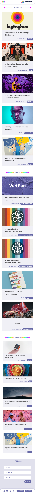
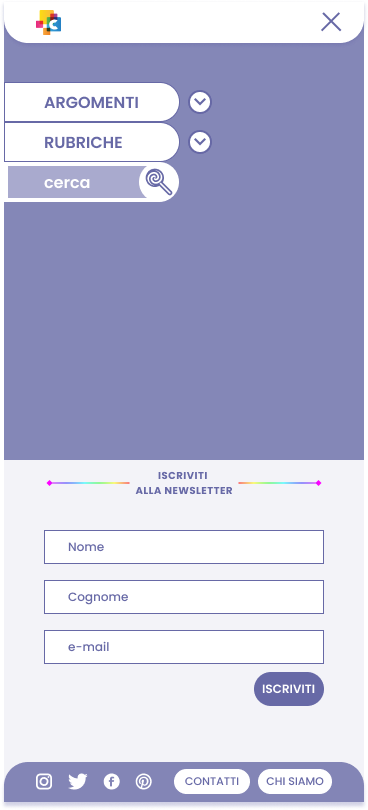

Mobile: homepage

Mobile: menu di navigazione



Il brief di questo lavoro accademico era quello di realizzare un sito web informativo, attraverso: la definizione di concept e linea editoriale; l'organizzazione e la cura dei contenuti; la progettazione dell'interfaccia utente nelle versioni desktop e mobile. L’output finale del progetto è stato un prototipo ad alta fedeltà di entrambe le versioni.

Cromatica è una webzine a cadenza mensile che parla dei colori puntando i riflettori su cinque ambiti: design, arte, musica, film/serie TV e moda.
La webzine si compone di quattro rubriche: "Pantone dell’anno", un approfondimento annuale sul colore Pantone eletto; "Palette della stagione", un approfondimento semestrale sulle tendenze cromatiche, diviso in primavera-estate e autunno-inverno; "Pietre preziose", rubrica ad aggiornamento mensile dedicata alle pietre colorate e alle loro caratteristiche; "Leggiamo", rubrica ad aggiornamento mensile dedicata ai consigli di lettura.
La webzine è dedicata agli addetti ai lavori, agli studenti e a tutti i curiosi che vogliono tenersi a passo con i tempi e conoscere fatti singolari sui colori.
Luisa Amato


© Copyright 2023 by Maria Fiorello